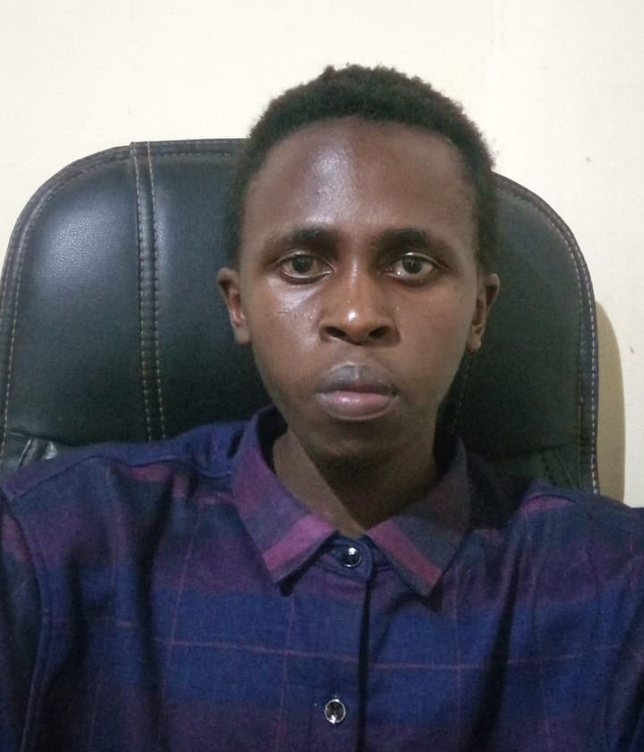

Applied Biology Undergraduate
Hello, I'm Ngutu Euwin Murumbi
Welcome to my academic and personal portfolio.
I am an Applied Biology undergraduate at Jomo Kenyatta University of Agriculture and Technology (JKUAT). I am building a foundation in biological sciences and developing my interests in laboratory science, biological research, biotechnology and scientific innovation.
I enjoy learning how scientific knowledge can be applied to understand living systems and address practical challenges. This website introduces my education, skills, interests and some things I enjoy outside my studies.
Explore my academic journeyQuick Facts
BSc Applied Biology
JKUAT
Year 2, Semester 1
Juja, Kenya
Research and Laboratory Science
A Little About This Website
This portfolio brings together my academic background, developing competencies, personal interests and contact information. I will update it as I gain new skills, complete laboratory practicals and take part in research or professional activities.